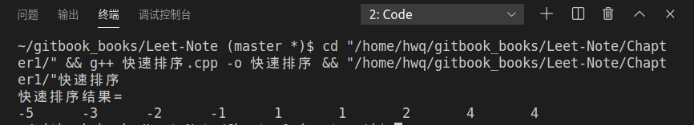
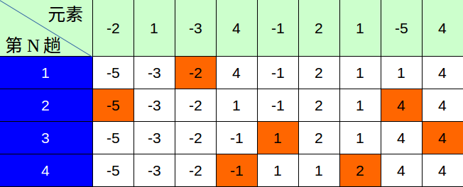

快速排序
问题：
实现对数组int arr[9]={-2,1,-3,4,-1,2,1,-5,4}的快速排序，并画出流程图
方法： 分治法
快速排序原理：
- 任找一个元素作为基准，对待排数组进行分组
- 使基准元素左边的数据都比基准元素小，右边的数据都比基准元素大。这样基准元素就放在了正确的位置上。
- 然后对基准元素左边和右边的数据分组进行相同的操作，最后完成数组的排序。
代码如下:
#include <iostream>
using std::cin;
using std::cout;
using std::endl;
int Partition(int arr[], int low, int high){
int pivot_key=arr[low];//临时存储基准值
while(low<high){
while (low<high && arr[high]>=pivot_key) --high;
arr[low]=arr[high];
while (low<high && arr[low]<=pivot_key) ++low;
arr[high]=arr[low];
}
arr[low]=pivot_key;//把基准值放到最后准确的位置
return low;
}
void QuickSort(int arr[], int low, int high){
int pivot;
if(low<high){
pivot=Partition(arr,low,high);
QuickSort(arr,low,pivot-1);
QuickSort(arr, pivot+1,high);
}
}
int main(){
int arr[9]={-2,1,-3,4,-1,2,1,-5,4};
QuickSort(arr,0,8);
cout<<"快速排序结果= "<<endl;
for (char i = 0; i < 9; i++){
cout<<arr[i]<<'\t';
}
cout<<endl;
return 0;
}
运行结果：

快排流程图

注: 褐色的数字格表示此趟快排的基准值
算法复杂度分析:
时间复杂度：
空间复杂度：